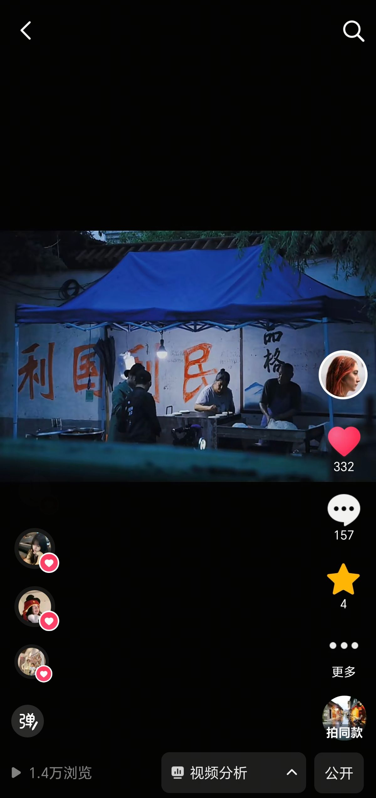
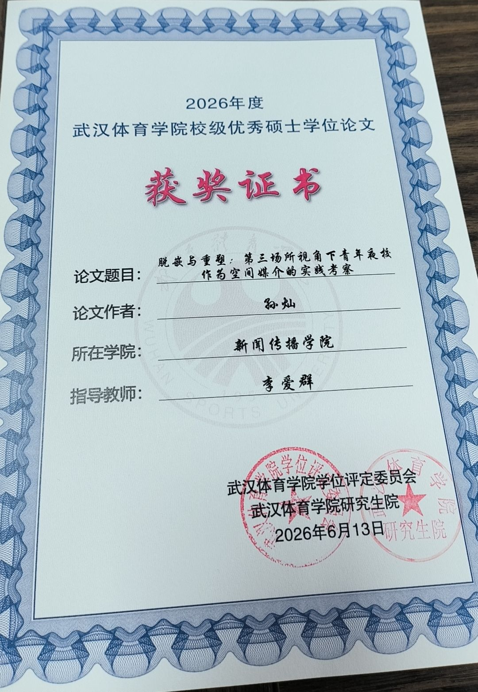

孙 灿
Sun Can
新闻传播×品牌公关×内容创作
求职方向：品牌公关、市场策划、企业传播。从市级电视台新闻采编与日报社记者起步，到甲方品牌公关实战。对接过省级主流媒体，运营过抖音/小红书品牌账号，在车展现场统筹过品牌活动。从媒体关系到内容策略，从田野调研到数据分析——每个方向都不是"听说过"，而是亲手做过。
Sun Can
新闻传播×品牌公关×内容创作
求职方向：品牌公关、市场策划、企业传播。从市级电视台新闻采编与日报社记者起步，到甲方品牌公关实战。对接过省级主流媒体，运营过抖音/小红书品牌账号，在车展现场统筹过品牌活动。从媒体关系到内容策略，从田野调研到数据分析——每个方向都不是"听说过"，而是亲手做过。
从大一寒假在鲁山县电视台跟记者上山下乡拍脱贫攻坚，到宿迁日报社的选题会、宿迁电视台的演播室，再到甲方品牌公关的车展Campaign——我的传播训练从一线新闻采编起步，横跨媒体、教学、公关三条线。
考研失利后教过一年高三语文，学会了控场和把复杂的事讲清楚。三年硕士把零散的实践串成体系，专业第一毕业。
投入品牌传播领域，是因为我相信——在田间地头拍过镜头、在截稿压力下写过新闻稿、在车展现场统筹过品牌活动的人，更知道怎么把品牌的故事讲进用户心里。
对接湖北日报传媒集团，维护企业媒体关系库。独立撰写品牌通稿与媒体沟通材料。5 场线下品牌活动 Campaign 执行，配合武汉文旅集团完成多方协同。曾在省级电视台与日报社完成新闻采编实习，理解主流媒体话语体系与内容生产流程。
独立运营抖音/小红书账号，22 条短视频累计浏览 15w，粉丝增长 40%。策划"高考公益拍摄"话题营销，浏览量 5w+ 带动营业额提升 30%。小红书个人账号发布"考研复试调剂笔记"系列 4 篇，浏览量达 8k，咨询服务近百人。抖音个人账号策划"小城烟火气"摄影图集，浏览量达 1.4w。独立完成 8 期主题摄影创作，客片转化率 65%——从创作者视角理解 KOL 合作生态与内容策略。
独立完成 1316 份问卷 SPSS 信效度分析与 Nvivo 质性编码。每周输出竞品数据周报为营销决策提供依据。毕业论文青年夜校前中期调研，深度访谈近 50 人次。具备从信息监测→趋势研判→周期性报告输出的完整方法论。两篇获奖论文均涉及社交媒体文本的结构化叙事分析。
以下案例覆盖媒体关系、品牌活动、内容创作与叙事影像四个维度。每个案例都标注了与品牌传播核心能力的映射。


.jpg)
.jpg)





8 期独立主题摄影创作，从"夏日少女"到"玫瑰少年"，每期完成选题策划 → 模特沟通 → 场景设计 → 拍摄执行 → 后期制作全流程。客片转化率 65%，复购占比 25%。
▶ 映射：视觉审美判断力 · 创作者视角下的内容质量管理 · 品牌视觉调性的把控能力

为中国扶贫基金会"善行100"大学生公益劝募项目制作志愿者培训宣传片。独立完成选题策划、脚本撰写、实地拍摄与后期剪辑全流程。
作品被中国扶贫基金会采纳，纳入"善行100"全国高校培训官方素材库，在 100+ 所高校志愿者培训中规模化复用。

一个横跨十年的真实故事。矿大支教团深入乡村小学，黑板前的那个身影，让一个小学生决定考矿大。后来她真的去了。两条时间线交叉叙事——不靠旁白，画面自己说话。

2020 年春天，疫情让一切戛然而止。这部微纪录片跟踪记录了多位矿大 2020 届毕业生——被困在家里的、在实验室隔离的、在云端答辩的。没有宏大叙事，只有普通人在特殊年份里的真实表情。

统筹 6 人跨学科团队赴湖北恩施白杨坪镇开展 5 天田野调查。设计双版本问卷与 7 套深度访谈提纲，覆盖 8 类利益相关方。完成 1316 份有效问卷的 SPSS 信效度分析（Cronbach's α=0.718）与 Nvivo 质性编码。独立撰写 2.3 万字调研报告，提炼的发展模式获政府采纳，被 2025 中国旅游高质量发展创新论坛录用作专题汇报，获《大学生云报》报道。

以微信公众号"NMO上海之家"患者自述文本为研究对象，运用健康叙事框架对社交媒体上的疾病表达进行四维分类（疾病叙事/生活叙事/社会支持叙事/情绪表达叙事），识别患者身份建构策略与隐喻使用规律。展示了社交媒体文本结构化叙事分析的方法论能力，与品牌传播中的用户心智洞察和内容策略分析具有方法论共通性。
聚焦 2023 年全国"夜校潮"现象，以武汉市青年夜校为调研对象，运用参与式观察与深度访谈法（访谈 30+ 人），探讨青年在数字化"附近消失"后如何通过夜校实现社会连接的再嵌入。展示了社会趋势捕捉、田野调查执行与质性研究的系统训练。

茶产业调研成果获白杨坪镇政府官方采纳函，直接推动了当地龙赶湖景区研学楼建设与康养设施升级。罕见病论文在 2024 媒介文化论坛作现场汇报。夜校调研向武汉市委相关部门提交了访谈分析报告。学术研究不只是纸上论文——它真实地影响过政策、推动过建设、帮助过决策。

有效问卷 SPSS 信效度分析
累计调研报告与论文撰写
抖音视频累计浏览量
线下品牌活动统筹执行
求职方向：品牌公关、市场策划、企业传播
如果你在找一个懂媒体话语体系、能写新闻通稿、能运营社交媒体、也能用数据分析传播效果的品牌传播人——欢迎联系。
即日到岗深圳。